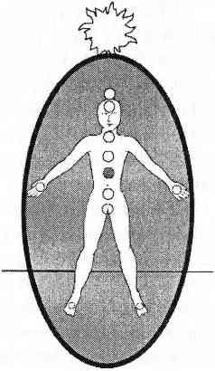

ÜÇÜNCÜ ÇAKRA GÜNEŞ SİNİR AĞI ÇAKRASI
Bu güneş sarısı, etki edici çakra, güneş sinir ağının tam ortasında, göbek deliği ile göğüs kemiğinin arasındadır. Üçüncü çakra düşünce ve akılla; düşüncenin beden üzerindeki etkisi ile ilgilidir. Adrenalin ve pankreas ile bağlantılıdır. Aynı zamanda da psişik bağışıklık sisteminin merkezidir. Tehlikeye karşı, kapanarak, çok ısınarak ya da enerjisini ikinci ve dördüncü çakraları korumak için kullanarak tepki verir.

Açlığa bağlı olmayan kemirici bir karın ağrısı genellikle tehlikeli insanlar karşısında ya da tehlikeli ortamlarda kapanmaya çalışan üçüncü çakranın işaretidir.
Üçüncü çakranız aynı zamanda auranız ya da nöbetçiniz sizi gerçekten koruyamayacak kadar zayıf olduğunda da kapanmaya çalışır. Onları iyice güçlendirin.
Beden seviyesinde üç çakra (birinciden üçüncüye); ruh seviyesinde üç çakra (beşinciden yedinciye) ve bir de geçiş sağlayan çakra (dördüncü çakra ruh ve beden arasındaki köprü görevini görür) vardır. Sekizinci çakra bütün sistemin başıdır.
Üçüncü çakra en üstteki beden seviyesi çakrasıdır.
En üstteki beden çakrası olması dolayısıyla üçüncü çakra spiritüel bilgiyi birinci ve ikinci çakraya süzen çakradır. Bu süzme ve spiritüel bilgileri diğer çakralara iletme işlemi beden ruh ilişkisini sağlıklı ve hayatta tutar. Üçüncü çakra ve kalp çakrası sağlıklı olduğunda, üçüncü çakra üç ruhsal çakradan gelen bilgileri kalp çakrasından tercüme eder. Daha sonra bu bilgileri birinci ve ikinci çakraya iletir.
Eğer dördüncü çakra dengesizse ve ondan gelen bilgiler açık değilse, üçüncü çakranız tüm vaktini bu karmaşık mesajları çözmekle geçirir. Sağlıksız ya da yorgun bir dördüncü çakradan gelen karmaşanın çözülmesi ile meşguliyet üçüncü çakrayı ve sizi saldırılara açık bir duruma getirir. Dördüncü çakra bilgiyi çözemese bile yorgun üçüncü çakra beden ruh bağınızı hayatta tutmaya çalışacaktır. Eğer yorgun üçüncü çakranız sizi korumaya zaman ayıracak durumda değilse işte o zaman bedeninizden ayrılabilirsiniz.
Eğer üçüncü çakranız sağlıklı değilse (örneğin uzun zamandır tehlikeli ilişkilerin içinde kalarak üçüncü çakranızı sürekli uyanık tuttuysanız) dördüncü çakradan gelen tüm ruhsal bilgiyi göz ardı etmek ve sizi korumak zorunda kalabilir. Kısa bir zaman sonra dördüncüden üçüncüye iletişim kesildiği için beden ruh ayrılması yaşarsınız.
Üçüncü çakra aynı zamanda kalp çakrası aracılığı ile bedensel çakra ilişkilerini ruhsal çakralara iletmekle görevlidir. Eğer üçüncü çakra tıkalıysa ve beden seviyesindeki bilgileri üst çakralara iletemiyorsa üst çakraların bilgisi bedende ya okunamaz, anlaşılamaz ya da Manila'daki politik durum gibi (Filipinli değilseniz ve hatta Filipinli tek bir kişi bile tanımıyorsanız) anlamsız ve hiçbir şey yapamayacağınız bir uçak kazası gibi gereksiz bilgiler olacaktır.
Üçüncü çakranın desteği ve bedenin gerçekleri olmadan üst çakralar başıboş kalıp bir sürü gereksiz bilgi toplamaya başlarlar. Beşinci çakra her yandan ses toplamaya başlar. Altıncı çakra birbirinden kopuk görüntüler yakalamaya ve yedinci çakra da sizinle bağlantısı olmayan ruhlardan bilgi aktarmaya başlar. Sağlıklı bir üçüncü ve dördüncü çakra bağlantısı sağlamak sizi bu saçmalıklardan uzak tutacaktır.
Batı dünyasında maalesef karman çorman edilen pek çok spiritüel bilgi gibi üçüncü çakra da en hatalı tanımlanan çakradır. Batılılar nedense dördüncü çakrayı en önemli çakra kabul ederler. Her nasılsa “kötü güç” çakrası (üçüncü) insanları kalplerinden uzak tutar ve savaşların, ırkçılığın, paranın, egoizmin; kötü olan her şeyin sorumlusudur. Dördüncü çakra bölümüne geldiğimizde bu tek çakra saçmalığı hakkında bir çıngar çıkaracağım ama önce zavallı abluka altındaki üçüncü çakra ile ilgileneceğim.
Tekrarlamak isterim ki, sağlıklı bir çakra sağlıklı çalışan bir çakra sistemi ile iletişim halinde olan çakradır. Yolundan çıkarılan birinci çakranın nelere neden olabileceğini ve zevk için nasıl diğer çakraları uçurabileceğini gördük. Manipüle edilmiş bir kundalini baskını, dengesizliklere, kesintilere ve farkındalıktan uzaklaşmaya yol açar. Dengesizlik herhangi tek bir çakrayı kapatarak da oluşabilir. İşte bu bazı kişilerin kötülüğün kökü olarak üçüncü ya da güç çakrasını görmeleri sonucunda yaptıklarıdır. Bu kişilere empatik ve sevgi dolu olan kalp çakrası inancının tek inanç olduğu öğretilmiştir. Onlara öğretilene göre üçüncü çakranın görevi olan koruma, ayırma ve bağışıklık işlevlerine izin verildiğinde sevgi deneyimleri mahvolacaktır.
Burada size bunun tamamen yanlış olduğunu söylemek isterim. Üçüncü çakra sadece bir çakradır. Ne kötü ne iyi, ne doğru ne yanlıştır. Onlarca iş görür ve başınızı derde sokabilecek tek bir işlevi vardır ki o da gelen enerjiyi kontrol etmektir. Üçüncü çakra eğer birisi ile çıkabilecek bir kavga hissederse (ve siz henüz enerji farkındalığında değilseniz) size onun üçüncü çakrasına kontrol edici bir enerji topu yollatarak çıkacak kavgada üstün durumda olmanızı sağlamaya çalışır. Bu toplar kimi zaman saldırganları yerinde mıhlar ve bu da sizin diğer insanları kontrol edebilmek için üçüncü çakranıza bağımlı hale gelmenize neden olur.
Bu bağımlılık üçüncü çakra ile suç işlemenize bile yol açabilir. Yapmamayı öğrenmeniz gereken kötü bir alışkanlıktır. Enerji topu fırlatmanıza neden olabilir düşüncesi ile üçüncü çakrayı tamamen kapatmak aptallıktır. Üstelik tüm çakralar enerji topları fırlatabilir hatta şu pek sevilen kalp çakrası bile! Üçüncü çakranın atik koruması olmadan hem dördüncü hem de ikinci çakra kendilerine zarar verecek tüm emici faaliyetlere açıktırlar ve işte böylece de kıyamet kopar. Bu kaosun ortasında pek sevgili kalp çakranız en az sizin kadar korunmasız ve zavallı kalacaktır.
Sağlıklı bir üçüncü çakra, kalp çakrasının çalışabilmesi için elzemdir. Eğer İletişimci ve koruyucu üçüncü çakra kapatılırsa kalp çakranız bunun sonucunda çok büyür ve sağlıksız bir hale gelir. İçindeki tüm sevgi, sonunda tek bir damla kalmayıncaya kadar akar gider. Bu istenmeyen durum sevgili kalp çakrası şifacılarının binlercesinin sonunda bedenlerinin iflas etmesi ve enerjilerinin bitmesi ile son bulur. Yeniden iyileşmeleri ancak üçüncü çakralarının açılması ve hayatlarının bir bütün olması ile mümkündür.
Bu üzücü yıkımdan ancak üçüncü çakralarımızı açık ve sağlıklı tutarak sakınabiliriz. Durugörülü altıncı çakra çalışır ve enerjileri görürken üçüncü çakrayı gelebilecek tehlikelere karşı uyarır. Sağlıklı bir sistemde böyle durumlarda üçüncü çakra, aurasını, topraklanmasını ve nöbetçisini güçlendirir; böylece zararı en aza indirgemeye ve enerji topu yollamaya gerek kalmamasını sağlamaya çalışır.
Fiziksel dünyada tehlikeler vardır. Memeli bir hayvan olarak düşünürseniz bedenlerimiz inanılmaz derecede korunmasızdır. Ne pençelerimiz, ne koku bezlerimiz, ne de sivri dişlerimiz vardır. Bedenlerimiz korunmasız bir halde, tehlikeye açık durumlarla her gün kendi başına başa çıkmak zorundadır. Eğer Yeni Çağ felsefesine inanırsa o zaman tüm enerji ve insan karşılaşmaları güvenlidir, o zaman üçüncü çakramızı kapamalıyızdır. Ama asıl o zaman hiçbir korunmamız kalmayacaktır. Hiç.
Korunmazsak dünyaya daha az faydamız olur. Üçüncü çakramız sadece bizi korumakla kalmaz aynı zamanda dünyadaki yerimizi de belirler. Üçüncü çakramızın koruyucu nitelikleri olmadığı zaman daha az kendimiz oluruz. Daha faydasız ve katkısız bireyler oluruz. Yabancı mesajlarla, yabancı enerjiyle ve yabancı kararlarla dolarız.
Fiziksel bağışıklık sisteminde yabancı maddelerin ve yabancı gıdaların tanımlanması sadece alarma geçip korunmak değildir. Yabancı olanı tanımlayabilmek için bağışıklık sistemi en önce kendi hücrelerinin neye benzediğini bilmelidir. Bağışıklık sistemi her dakikasını bedende dolaşıp “Bu bana ait, bu benim, bu bana ait, bu bana ait...” diyerek geçirmektedir. Saldırıya geçmiş yabancı bir maddeyi “Bu benim değil!” diyerek tanımlayabilir. Sağlıklı bir bağışıklık sisteminde, korunma ancak kendinin olanı bilmekle mümkündür.
Aynı şey psişik ya da spiritüel bağışıklık sistemi için de geçerlidir. Sağlıklı ve kendisinin farkında bir bireyin üçüncü çakra enerjisi sürekli olarak enerjilere dokunur ve onları gözlemler. Şöyle demektedir; “Bu duygu benim, şu enerji benim, bu mesaj benim...” Ta ki yabancı bir şeyle karşılaşana kadar. Karşılaştığı zaman enerjiyi kategorize eden altıncı çakrayı ya da enerjinin duygusal içeriğini inceleyen ikinci çakrayı uyarır. Sağlıklı bir üçüncü çakra işte o zaman midede bir acı ile ya da aurada bir titreme ile sahibini uyarır. Şanslıysa çakra sahibi uyarıyı ciddiye alır, yoksa sağlıklı üçüncü çakra bu enerjiyi bir koza içerisine alır ve bir sonraki iyileşme seansına kadar bekler; böylece o seansta yabancı enerjinin topraklanmasını sağlar.
Sağlıksız bir çakra sisteminde özellikle beden ruh ayrışımı oluştuğunda üçüncü çakra o kadar fazla çalışmış ve o kadar yorgundur ki, az da olsa bir kontrol sağlayabilmek için insanları yolundan iteler. Çoğu durumda üçüncü çakranın mideye verdiği uyarı mesajları sindirim bozukluklarına, ülserlere ya da güneş sinir ağında oluşan yağ depolanmalarına yol açar.
Bu tür üçüncü çakra sahipleri karar almakta ya da hatırlamakta zorlanırlar. Topraklanmamış ve tehlikede olabilirler, yoldan çıkmışlardır ve her şeyi kabullenen felsefelerinin iyileştiremeyeceği bir sessiz umutsuzluk içindedirler. Sonunda fiziksel ve spiritüel olarak hastalanırlar bağışıklık sistemi çalışmayan herkesin başına geleceği gibi.
Bu kişilere iyileştirici enerji genellikle öfke nöbetleri şeklinde gelir. Öfke bildiğiniz gibi sınırları olan bir enerjidir. Sınırları olan enerji koruyucu bir aura oluşturulmasına ve böylece koruyucu üçüncü çakranın çalıştırılmasına yardımcı olur. Öfke aynı zamanda eksikliği hissedilen ve görmezden gelinen kişisel ihtiyaçları da yüksek sesle dile getirir. Öfke yönlendirildiğinde; umutsuzluk, depresyon ve korku ortaya çıktığında üçüncü çakra genellikle sağlıklı ve odaklanmış bir şekilde çalışmaya başlar.
Üçüncü çakra yeniden göreve geldiğinde sizden kalp çakranızı korumanızı ve size ait duygulara tepki vermenizi (“Bu bana ait”) isteyecektir. Bu desteklerle kendinizi hayatınızın içinde odaklayabilmeniz ve topraklamanız mümkün olacaktır. Enerjileriniz elinizin altında olduğunda üçüncü çakranız sağlıklı bir şekilde sizi koruduğunda dışardan gelecek her şeye bağımlı olmaktan çıkar ve içerideki her şeyi kabullenirsiniz.
İç huzurunu bulmak için kişinin bedeninden çıkması tam tersi bir harekettir. Aynı zamanda bir sapmadır. Sakın sapmayın. Üçüncü çakranızı çalıştırın, o size hayatınızdaki en önemli insanı kabullenmeyi öğretecektir. Ancak kendisini kabul edebilen insanlar gerekli ölçüler içinde başkalarını kabullenebilir. Herkesi kabullenen kişiler akılcı değildir ve kısa bir zaman içinde ne kendilerini ne de kendi tepkilerini kabullenecek hale dönerler. Sadece başkalarını kabul eden insanlar sonunda başkalarına yardım edemeyecek ya da iyileştiremeyecek kadar rahatsızlanırlar. Kendini kabul eden bireyler, spiritüel sağlıklarına sahip çıkan, başkalarına yardım edebilen insanlardır.
KAPALI YA DA AÇIK ÜÇÜNCÜ ÇAKRA
Çok geniş ve açık bir üçüncü çakra derhal normal açıklığına getirilmelidir. Şayet komşu çakralar kapanmışsa ya da garip renklerdeyse veya üçüncü çakranın açıklığı yanında mide, böbrek ya da sırt ağrısı varsa bunun anlamı ya çakra sistemindeki bir bozukluk ya da günlük hayatınızda çevrenizde bir tehlike olduğudur. Üçüncü çakrayı kapamak; nöbetçilerle ve negatiflik yiyen hediyelerle korumak çok önemlidir ama çakra sisteminin bütününü devamlı olarak iyileştirme girişiminde bulunmak da aynı önemi taşır.
Üçüncü çakra, bağışıklık sisteminin merkezi ve enerji düzeyinde ayrılabilmenin temeli olduğu için diğer çakralara yapılan saldırılardan ya da Onlardaki dengesizliklerden de etkilenir. Zor durumdaki bir üçüncü çakra ile acilen ilgilenilmelidir, çakraların geri kalanı ve aura ancak böylece normal çalışmasına dönebilir. Çakra iyileşmesi hakkındaki diğer bölümler sizi çakra dengeleme ve çakra meditasyonu konusunda bilgilendirecektir.
Çok açık üçüncü çakra, sağlıklı bir çakra sisteminde bulunuyorsa, bu, beden ve ruhun iletişim halinde olduğunun göstergesidir. Üçüncü çakra bilgi ve enerji toplayarak bilinçli düşünceler ve sağlık konularında büyük bir atılım yapmaya hazırlanmaktadır. Açık olduğu halde üçüncü çakranın sağlıklı olup olmadığı sadece komşu çakraların değil tüm çakraların renklerinin ve sağlıklarının yerinde olması ile tanımlanabilir. Karmaşık bir iç ya da dış çevre bu açıklığın bilinçli ve sağlıklı olmadığının; üçüncü çakranın yanlış kullanıldığının işaretidir.
Kalp çakrasının destekçisi anti üçüncü çakra öğretileri bütün enerjilere açık olmamızı çünkü hepimizin bir bütün olduğunu söyler. Buysa üçüncü çakranın bilinçsizce ve sağlıksızca genişlemesine; kenarlarının üst bedenin sınırlarına kadar yayılmasına yol açar. Bu öğretiler bize her şart altında yargısız, ayrımsız tüm enerjiyi kabul etmemizi telkin eder. Bu inancın sağlıksız bir üçüncü çakraya gereksinimi vardır. Açıkçası bu “hepimiz biriz” görüşünü tüm dünya koşullarının ışığında ciddi olarak düşünmek gerekir.
Manevi dünyada hepimiz biriz; tek bir ruhuz. Ruhta birliğe ulaşmak, bunu elde etmek için yapılacak herhangi bir çalışma yoktur. Ruh düzeyinde hepimiz aynı Tanrı’nın çocuklarıyız; aynı yerden geliyoruz ama kendi spiritüel çalışmalarımızı yapıyoruz. Spiritüel birlik sağlıksız bir üçüncü çakra gerektirmez, işte bu yüzden spiritüel birlik inancının zarar verici yan etkileri yoktur.
Aklın krallığında ise bir olmak için çalışmalar yapabiliriz. Düşüncelerimizi değiştirebilir ya da bilgimizi tüm düşünceleri kapsayacak şekilde derinleştirebiliriz. Akıl düzeyinde, zihnimizin işleyişi daima bireysel de olsa, aynı yerden gelmeyi öğrenebiliriz. Akıl birliği de sağlıksız bir üçüncü çakra gerektirmez. Uzun zamandır övülen inançların desteksiz olduğunun ispatlanmasının yarattığı az bir karmaşa dışında aklın birliğinin zarar verici yan etkileri yoktur.
Duyguların krallığındaysa başkalarıyla bir olmak oldukça kolaydır. İkinci çakramız açılabilir ve başka birinin duygu durumunun doğrudan bedenimize girmesine izin verir. Bu mükemmel bir konum değildir çünkü psişik sünger olma kötü alışkanlığına dayanır, ama yine de yapılabilir bir şeydir. Başkasının duyguları ile çalışmanın çok daha iyi yolu o kişinin duygularını kendi duygusal gerçekliğimiz içinde kalarak tanımak ve kabullenmektir. Bu ayırt ediş (süngerliğin tam tersi) kendi sağlıklı üçüncü çakramız tarafından yaratılır ve sürdürülür.
Duygu anlamında birlik, spiritüel birliğin ya da akıl birliğinin aksine sünger olmayı gerektirir. Sınırları kaldırmak, yabancı enerjiyi kabullenmek ve psişik korunmadan vazgeçmek gerekir. Duygusal birlik sağlıksız bir üçüncü çakra gerektirir. Bunun yarattığı zararlar çok karmaşık olabilir. İkinci çakraya bağlı zararların yanında üçüncü çakradaki dengesizlik sonucunda fiziksel zarar da görülür.
Bu şekilde “duygu birliği” içinde olan insanların bağışıklık sistemleri çok zayıftır. Hem çevrelerindeki insanların duygularına hem de fırsatçı bedensel enfeksiyonlara açıktırlar. Sürekli olarak nezle ve gripten; gıda ve kimyasal maddelere alerjiden; mide ve sindirim sistemi sorunlarından muzdariptirler. Kendi duygu ve düşüncelerini çevresindekilerin duygu ve düşüncelerinden bağımsız olarak kullanamazlar. Kronik cilt sorunları yaşayabilirler. Duygusal birlik (sünger gibi duygu emicilik) aile dışında uygulandığında ve yabancı enerji bedene çekildiğinde üçüncü çakra zarar görmeye mecburdur!
Fiziksel birlikse imkansızın ta kendisidir. Fiziksel düzeyde bir başkası ile bir olmanın ve bir kalmanın hiçbir yolu yoktur. Cinsellik, aşıkları bir an için birleştirir ama sadece bir an. Bundan daha uzun süreli temas hem münasebetsiz bir durumdur hem de gülünçtür. Bedenler bir başka bedenle bir olamaz.
Bir olmamız gereken tek kişi var; o da biziz. Bir olmamız gereken tek ruh var; o da Tanrı’dır. Kendinizle bir olmak için yapacağınız gerçek çalışmaya geri dönün. Kendinizi bildiğiniz zaman tüm insanları bileceksiniz. Kendiniz yerine tüm insanları bilmeye çalışmak tersine bir çabadır. Tanrı’yı tanımak için tüm deneyimleri ve bilgiyi toplamaya çalışmak da tersine bir çabadır. Tanrı’yı bildiğiniz zaman bilmeniz gereken her şeyi bilirsiniz. Normal açıklığındaki sağlıklı üçüncü çakranız eğer dinlemeyi bilirseniz size tekrar tekrar kişisel hedeflerinizi, görevlerinizi, tepkilerinizi, duygularınızı, sağlık gereklerinizi ve gerçeklerinizi söyleyecektir. Yapılamayacak, gereksiz ve uygunsuz birlik çalışmalarından sizi koruyacaktır.
Üçüncü çakranız ardına kadar açıksa, sağlıklı ve dengeli bir çakra sisteminde bulunuyor ve yukarda anlatılan duygusal bir olma sıkıntılarının hiçbirini yaşamıyorsanız çakra sisteminizi farkındalığı ve sağlıklılığı için kutlamalısınız. Bir sonraki farkındalık düzeyine geçmesine yetecek kadar sağlıklı olduğu için çok açılmış olan bir üçüncü çakrayla karşılaşmak bugünün dünyasında pek sık rastlanacak bir şey değildir. Toplumlar, sayısız dini ve spiritüel öğreti üçüncü çakrayı o kadar çok aşağılayıp batırırlar ki daha ilk yorumlamalarda çalıştığı ortaya çıkan bir üçüncü çakra fikri beni sadece şaşırtır!
Lütfen sağlıklı çakra sistemini her çakranın önüne bir merhaba hediyesi yerleştirerek kutlayın. Açık üçüncü çakranızın önüne ve arkasına en az üçer tane sıkı biçimde topraklanmış nöbetçi gül koyun.
Açık üçüncü çakranızdan gözünüzü ayırmayın. Bir hafta sonunda ellerinizi kullanarak açıklığını 9 ila 13 cm boyutuna indirin. Çakranız biraz daha açık kalmak isteyebilir. Eğer güvenli ve sağlıklı bir çevredeyseniz o zaman sağlıklı üçüncü çakranızı açık bırakabilirsiniz. Ancak böyle bir çevrede değilseniz yeniden böyle bir çevreye girene kadar çakranızı kapatın. Güvenli bir çevrede üçüncü çakranız ve diğer tüm çakralarınız en iyi şekilde çalışacaktır.
Sürekli kapalı olan üçüncü çakra hayatınız hakkında düşünmediğinizin ya da hayatınızı sorgulamadığınızın kanıtı olabilir; veya burnunuzun dibindeki tehlikeye karşı kendinizi koruma iradesine ya da becerisine sahip olmadığınızın işareti olabilir. İşleyen bir üçüncü çakra sizden şu konularda düşünmenizi talep eder; güvenlik, doğru yaşamak için gerekli olanı sağlama, doğru düşünme modelleri, iyileştirici etkisi olan sıcak bir çevre ve huzur. Bunlar harikulade beş konudur; tabii şayet şu andaki seçimleriniz sizi bu konulardan uzak tutmuyorsa. Üçüncü çakranızı açarken kendinize bu zor soruları sormanız gerekir. Hayatınız güvenli mi? Destek alıyor musunuz? Seviliyor musunuz? Hayırsa, neden hayır? Üçüncü çakranızı açmak bu soruların cevabını bulmanıza yardımcı olacaktır.
Yeni açılmış üçüncü çakranız çevrenizdeki tehlikelere tepki gösterecektir. Eğer üçüncü çakranız uzun zamandır kapalıysa ve tehlikeli bir ortamda yaşıyorsanız üçüncü çakranız başlangıçta size mide rahatsızlıkları, korkular, öfke patlamaları, kurtarma senaryoları, karmaşık düşünceler ve bunun gibi arazlar yaşatacaktır. Lütfen bu tür ortamlardan uzaklaşarak üçüncü çakranızı destekleyin. Her kimi isterseniz suçlayın ama oradan uzaklaşın. Tüm yeteneklerinizi kullanın, yardım da isteyin ama uzaklaşın. Sağlığınız özgür olmanızı gerektirir. Sağlıklı üçüncü çakranız özgür olana kadar kendinizi korumanıza yardım edecektir.
On beş yıl kapalı tuttuktan sonra üçüncü çakramı açtığım sırada hayatıma yeniden sahip olabilmek için yapmam gereken o kadar çok şey vardı ki, allak bullak bir haldeydim. Tam altı yıl boyunca her anlamda sağlığıma kavuşabilmek için didinip durmuştum; meditasyon yapmış, pek çok süreçten geçmiş ve yardım almıştım ama özgürlüğümü kazanıp hayatımın kontrolünü elime geçirmem bir dakika sürdü. Özgürlüğüm üçüncü çakramı açar açmaz ortaya çıktı. Ani özgürlüğüm destek gerektirmişti; dayak yiyen kadınlar sığınağı, tecavüz destek grubu, sağlık programları ve on sene devamsızlıktan sonra okula dönüş gibi yardımlar aldım. Sizin özgürlüğünüz için çok daha az destek gerekebilir. Özgürlüğünüzden şu anda ne kadar uzak olduğunuzu düşünseniz bile ondan sadece bir dakikalık uzaklıktasınız. Üçüncü çakranızı açın, ne demek istediğimi anlayacaksınız.
Genellikle açık ve sağlıklı olan üçüncü çakra kapandıysa ve diğer çakralar dengeli bir şekilde çalışıyorsa bu, üçüncü çakranın, ani koşullarda şiddetli bir kavgaya hazır olmadığını düşünerek kontrolcü birine ya da bir enerjiye gösterdiği tepki olabilir. Sağlıklı üçüncü çakranın böyle aniden kapanması, yanı sıra büyük bir açlık hissini ya da hafif bir mide rahatsızlığını getirir. Bu tür durumlara karşı uyanık olun ve bedeninizin ön kısmını sözü geçen enerjiden başka tarafa doğra çevirin. Bu, patlamayı bir an için önler ve size nöbetçi battaniyenizi açmak, hediyeler yollamak ya da bir sözleşme yakmak için fırsat verir. İhtiyaç anında korunma araçlarınızın nerede olduğunu hatırlamanıza fırsat verdiği için bu insana ya da enerjiye teşekkür edin. Size iyilik yaptılar.
Geçici olarak kapanmış üçüncü çakra, şayet sağlıklı bir sistemdeyse, tıpkı diğer çakralarda olduğu gibi, bir süreliğine sessiz bir çalışma yapıldığının işaretidir. Çakralar kimi zaman farkındalığınız tam bir denge noktasına ulaştığında kısa bir süre susarlar. Kendilerini tedavi eder, bataryalarını doldururlar; eski alışkanlıklardan kurtulma çalışmaları yapan bir çakrayı diğer çakralar gözetir. Şayet tümüyle sağlıklı bir çakra sisteminde üçüncü çakranızın kapanmış olduğunu fark ettiyseniz ve ani koşullarda ortaya çıkabilecek bir tehlike de söz konusu değilse, bu durumda üçüncü çakranız tatile çıkmış olabilir. Çakranızın tatile çıktığını sadece diğer çakraların sağlıklı ve dengeli çalıştıklarına bakarak değil, aynı zamanda üçüncü çakranın kapalı olmasına rağmen duyumsadığınız gevşeme hissine; sırtınızın rahatlamasına ve yiyecekleri kolay hazmedebilmenize bakarak da anlayabilirsiniz.
Tüm çakralarınızı başarıları için kutlayın ve her birine birer hediye verin. Auranızın içine üçüncü çakranızın önüne ve arkasına ikişer tane koruyucu nöbetçi yerleştirin ve yorumlamanıza devam edin. Üçüncü çakranız birkaç gün içinde ya da en fazla bir hafta içinde kendi başına açılacaktır. Eğer açılmazsa o zaman neye ihtiyacı olduğunu soran. Genellikle daha parlak bir aura sınırı ve daha güçlü bir nöbetçi sistemi ya da dürüstçe verilmiş duygusal tepkilerinizin daha fazla farkında olmanızı isteyecektir.
SAĞLIKLI ÜÇÜNCÜ ÇAKRANIN ÖZELLİKLERİ
Üçüncü çakra açık olduğunda; berrak, güneşli bir sarı enerji akıttığında bedene ve ruha, odaklanmış bir zihin bahşeder. Sağlıklı ve çalışan bir çakra sisteminin parçası olarak çalışan üçüncü çakra, ikinci çakranın duygusal ve bağlayıcı özelliklerine, düşünme, sezme, uygulama ve koruma yeteneklerini ekler.
Sağlıklı üçüncü çakra, birinci çakranın tamamen fiziksel olan iyileştirme ve beden fonksiyonlarını sürdürme özelliğine, çalışma, meditasyon ve uygulama esnasında korunmayı da ekler. Üçüncü çakrası sağlıklı olan şifacıların hem kendileri için hem de hastaları için görsel bir bilgi ansiklopedileri vardır, çünkü üçüncü çakra şifası bilgi ve inanç ile desteklenir.
Sağlıklı ve iletişim halindeki üçüncü çakra, aynı zamanda spiritüel bilgi ve sezgisel yetenekler konusunda yarattığı rahatlık duygusuyla da bilinir. Üçüncü çakra özgürce bilgi yollayıp alırken, ruh, bedeni beden de ruhu anlar. Sezgisel bilgi gerçektir, geçerlidir ve yararlıdır. Bedensel bilgi işitilir, onaylanır ve akıl müdahale etmeden spiritüel yardım için iletilir. Üçüncü çakraları sağlıklı olan insanlar için kendini bilmek basit her günlük bir olaydır.
Üçüncü çakrası sağlıklı olarak çalışan bir insan, akıl, spiritüel anlayış ve bedensel bilgi arasında denge kurmuştur. Bu üç durumdan hiçbiri diğerine baskın çıkmak için savaşmaz. Tam tersine iletişim halinde birbirlerine destek verirler. Buna, duygular üzerinde hakimiyetini sağlamış sağlıklı bir ikinci çakrayı da ekleyin; işte dengeli bir dörtlünüz oldu bile!